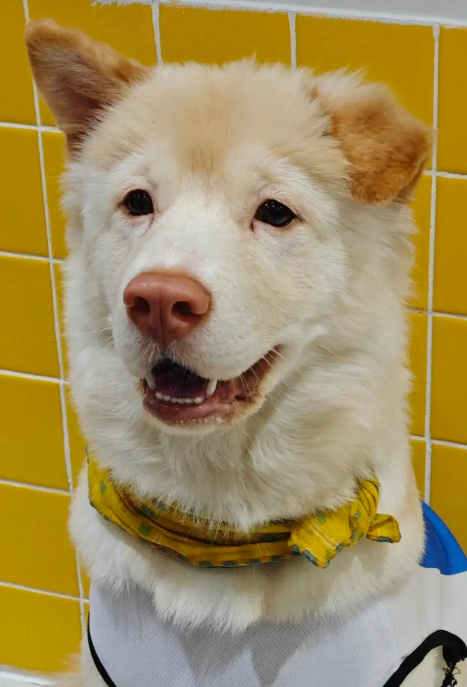

狗已就位Hi我是刷子
你的小狗
有你的声音
和你的性格
不出意外刷子会一直在这个屏幕里 除非你去线下看本汪

狗已就位有你的声音
和你的性格
温柔治愈
摁住 说话
意思意思嘴巴动动得了 拟人要花钱 咱就是说经费不足
录下你成为刷子的声音
找一个安静的角落，用平时的语气读一读。
“不管外面的世界多忙，刷子都在这让你更忙”
最多录制 60 秒 · 文件不超过 15 MB · 仅保存在当前浏览器
这个 Demo 已实现录音、保存和试听。让刷子用你的音色说出新句子，还需要独立的声音克隆服务。
聊天里的「系统朗读」只是设备自带语音，不是你的音色。录音不会发送给 Kimi。
先保存一段清晰录音，再生成你的专属音色。
录音会上传到火山引擎声音复刻服务训练，属不可逆云端处理。建议上传 15~60 秒清晰 WAV / MP3；浏览器直接录制的 WEBM 可能不被支持。训练完成后，聊天页的刷子会用你的声音说话，并实时驱动嘴部。
ONE OF A KIND, JUST LIKE YOU
SMALL THINGS, BIG FEELINGS
记不住的写下来允许你忘掉
记忆保存在当前浏览器。开启 Kimi 时，已保存记忆会随聊天发送，用于个性化回应。